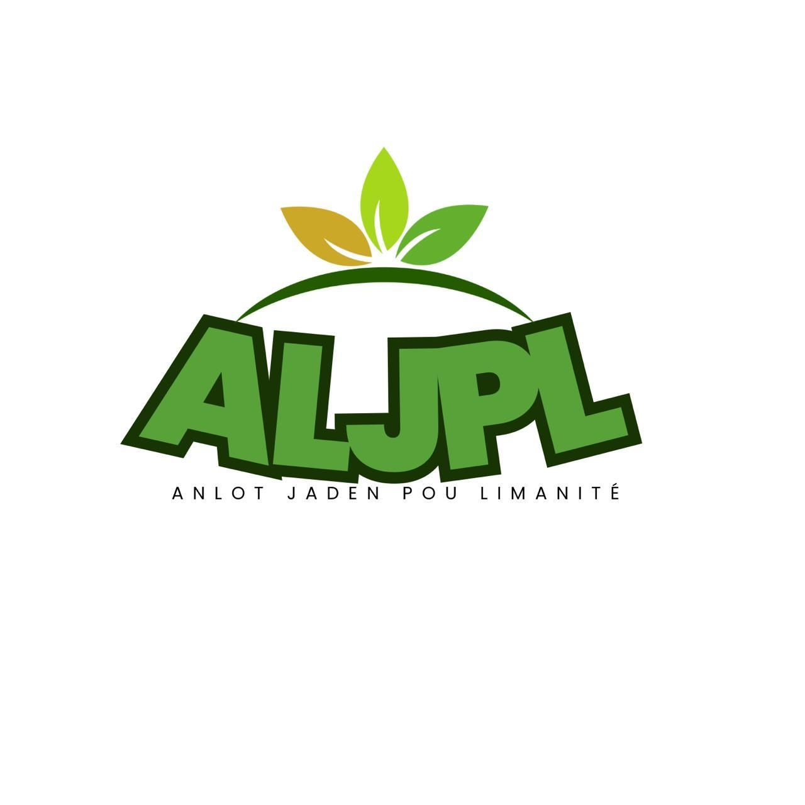
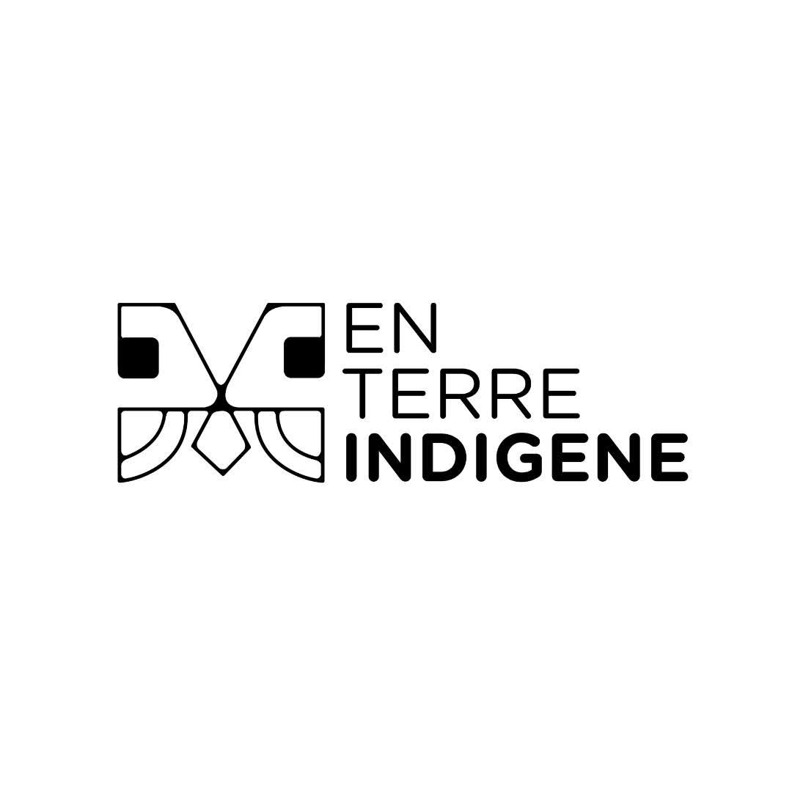
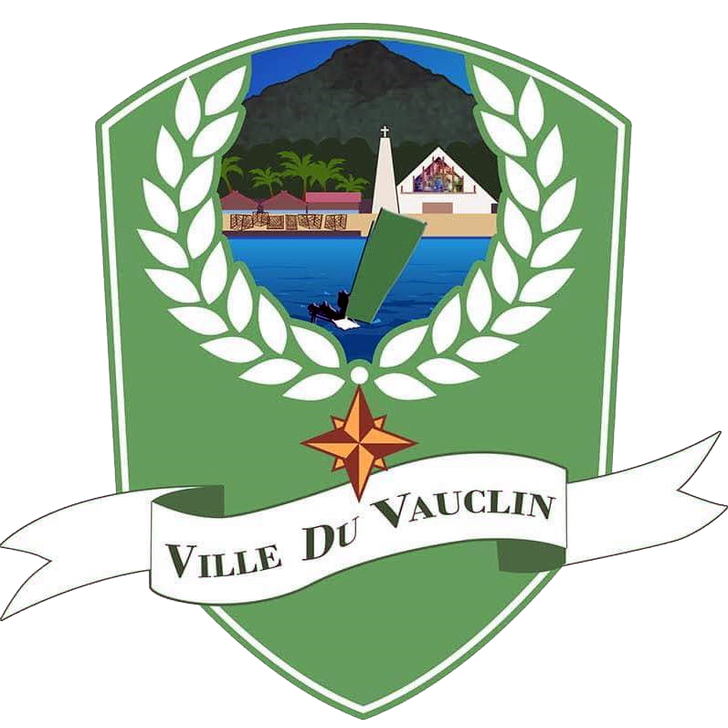
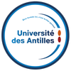
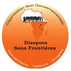
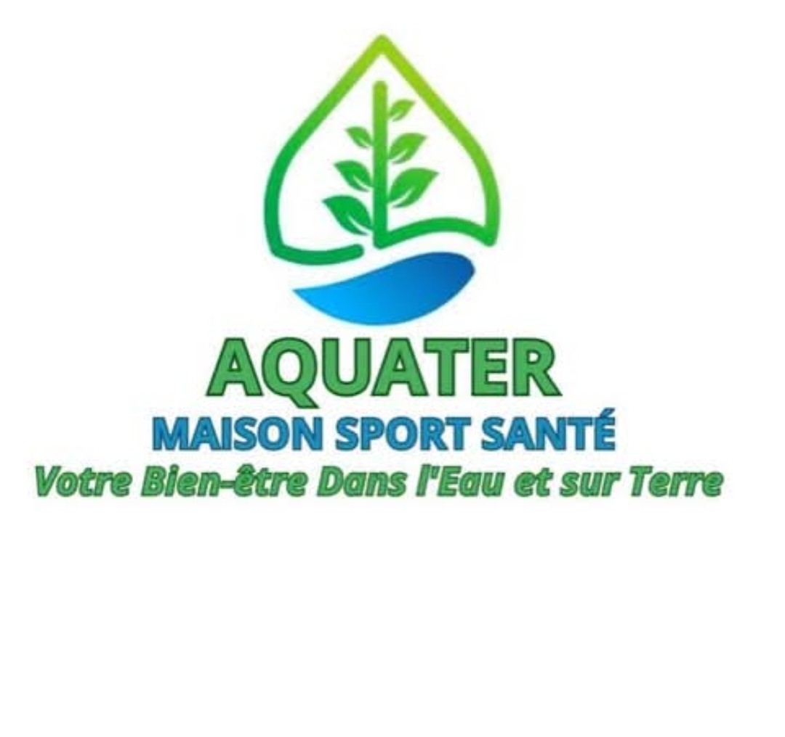
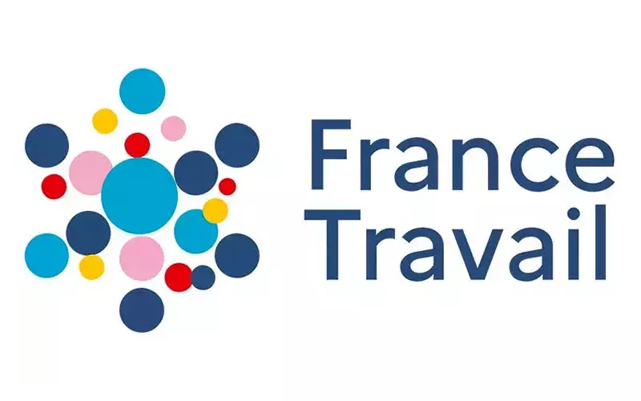

Le domaine vivant
Un laboratoire écologique et thérapeutique au Vauclin, pensé pour produire, transmettre et manger sain en Martinique.
Un laboratoire écologique et thérapeutique au Vauclin, pensé pour produire, transmettre et manger sain en Martinique.
Entre jardin nourricier, sous-bois, espaces de transmission et lieux de ressourcement, Domenn Lantik cultive une relation simple et profonde à la terre.
Le site réunit production, accueil, mémoire familiale et expérimentation écologique pour accompagner une souveraineté alimentaire concrète en Martinique.
Découvrir tout le domaine
Anlot Jaden Pou Limanité
En Terre Indigène
Fondation des Femmes
IASOTÉ · Patrimoine Rural
Fondation Chanel
Environmental Defense Fund
Partenaire EngagéRevenez à la terre, c'est là qu'il y a à boire et à manger.
”Fondatrice de Domenn Lantik & An Lot Jaden Pou Limanité
Développer un système autonome, résilient et engagé écologiquement. Un laboratoire vivant pour la souveraineté alimentaire de la Martinique.
Un modèle agricole autonome, résilient et engagé écologiquement, pensé pour une Martinique souveraine et durable.
Des espaces de méditation, ressourcement et naturothérapie pour les personnes en transition, accompagnées par des professionnels.
Préserver l'histoire et la magie du site, transmettre aux générations futures et honorer celles qui nous ont précédés.